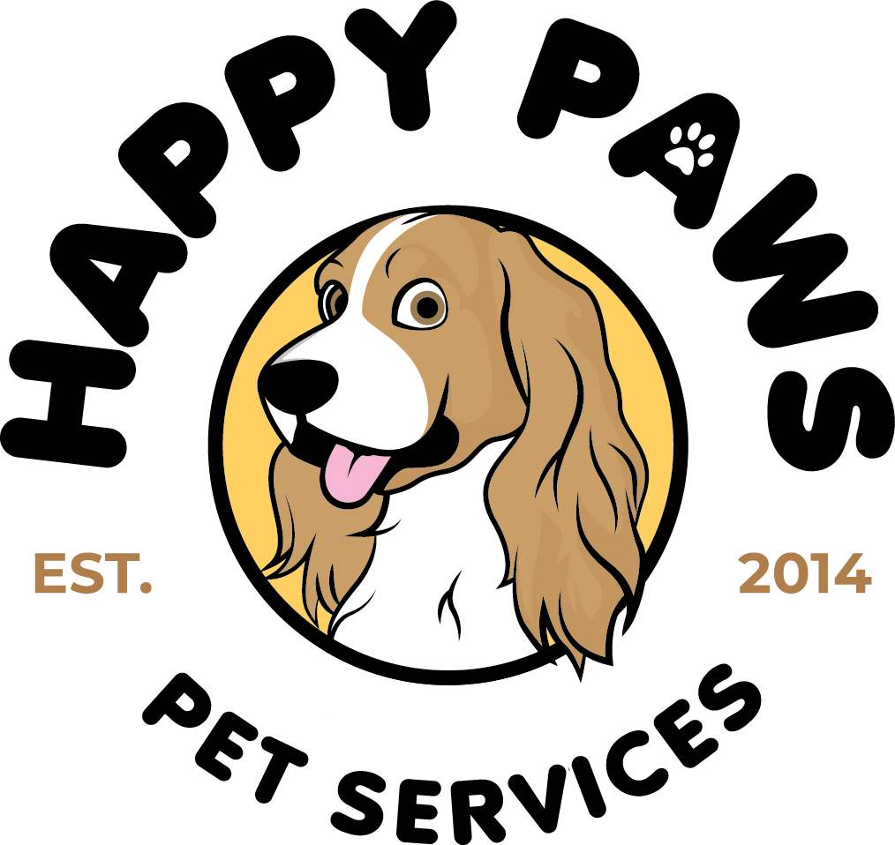

"WE'VE GOT A GOOD FELLING ABOUT YOU

happy paws
This webpage was created to show of this logo I created. It include the process of creating the logo, rationale for color choices, appeal to terget audience and design skills
HERE IS SOME MY UNIQUE THINKING THAT WENT INTO THIS LOGO DESING:
- How:I used lllustrator to created my logo. I mostly used the shape tools and pen tools to make my logo. I wanted to use a fornt that was playfull and fun, but also appropriated for the company/services and its mission
- Why:I created this logo beacuse I love cats. I wanted to creatd a Logo that was happy and inviting. I chose a complementry color scheme because I wanted good contrast
- Who:My audience includes people lookong for a visual desinger.I hope that when I apply for position in the futures that a logo like this would help future employers be interested in hiring me. I hope that my logo gives a professional, attractive and fun feel to my name so that if I were to ever have a line of work the logo would represent myself well.
Visit my blog to see more about this logoClick Here